السلسلة 3
الحافلة (صنف D) · 20 سؤال. كل سؤال فيه الصورة والصوت. اختار الجواب (ولا جوج إلا كانو صحاح)، ورك على «تأكيد» باش تشوف واش صبتي.
- 20سؤال
- 16باش تنجح
- 1 – 4جواب واحد ولا أكثر
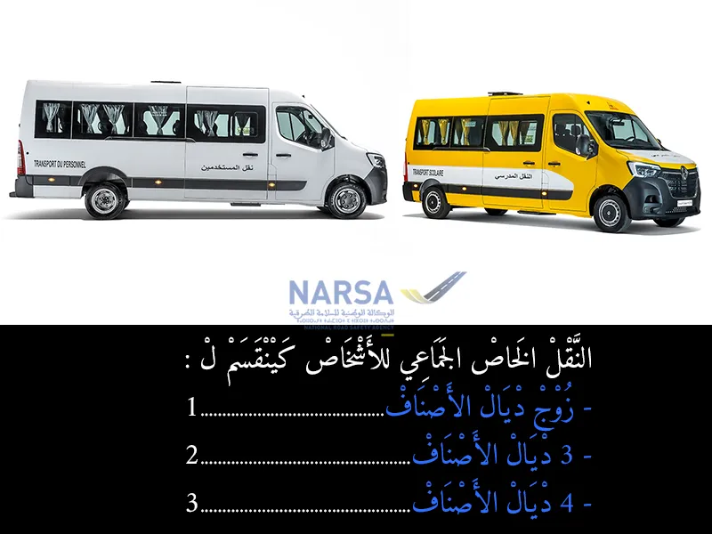
الكلافيي: 1–4 للجواب، Enter للتأكيد وللسؤال الجاي.
السلسلة 3 · النتيجة ديالك
0 / 20
السلسلة 3
الحافلة (صنف D) · 20 سؤال، بالصوت، مع الجواب الصحيح والشرح.
السؤال 1
بيّن الجواب
الجواب الصحيح: 3
حسب الفصل 1 من المرسوم رقم 2.63.363، النقل العمومي للمسافرين فالمغرب كيتقسم إلى أربعة أصناف مختلفة، وكل صنف عندو الخدمة ديالو الخاصة:
الصنف الأول: كيهم الحافلات السريعة لي كتخدم بمواقيت مضبوطة وممكن تكون بطابقين، وكتوقف غير فالنقط المحددة فجدول التوقف.
الصنف الثاني: ناقلات تقدر تمشي بوقت محدد أو بدون، وتقدر تنقل شوية ديال البضائع، ولكن بشروط (ما تفوتش 2 طن).
الصنف الثالث: حافلات كتخدم الأسواق وتنقل الناس والبضائع، ولكن حتى هي عندها شروط فالحمولة.
الصنف الرابع: كيهم النقل العرضي (بحال كراء حافلات للرحلات مثلاً)، خاصين ويخضعو لقوانين وتنظيم خاصالسؤال 2
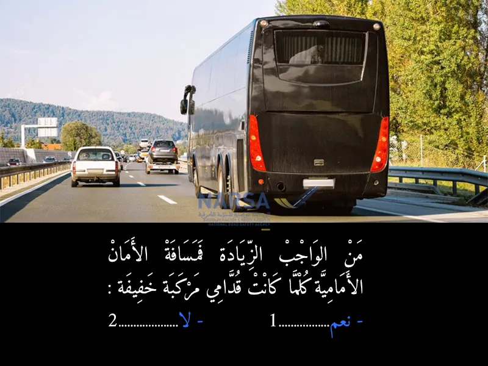
بيّن الجواب
الجواب الصحيح: 1
من الواجب تزيد مسافة الأمان الأمامية بين سيارتك والسيارة اللي قدامك، خاصة إذا كانت السيارة قدامك خفيفة (بحال سيارة صغيرة أو دراجة نارية).
السبب:
السيارات الخفيفة كتكون عندها قدرة أقل على التوقف بسرعة أو ممكن تكون أكثر عرضة للحوادث المفاجئة، وزيادة المسافة تعطيك وقت ومساحة أكبر باش توقف أو تتفادى حادث إذا صار شي طارئالسؤال 3
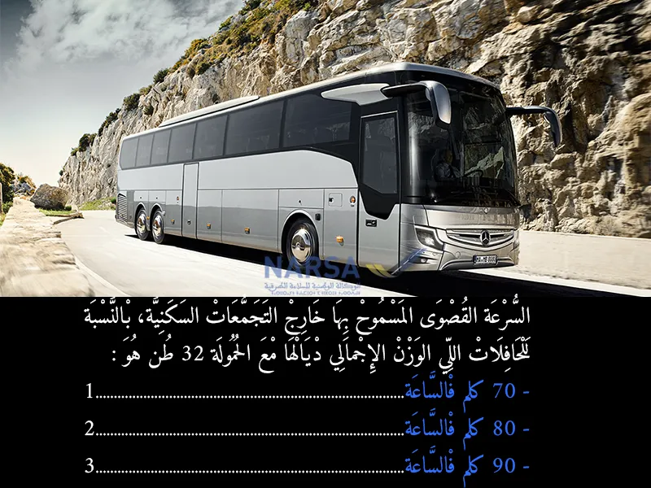
بيّن الجواب
الجواب الصحيح: 1
حسب المادة 176 من مدونة السير المغربية، السرعة القصوى المسموح بها للحافلات والشاحنات التي يتجاوز وزنها الإجمالي 3.5 طن هي:
70 كلم/ساعة خارج التجمعات السكنية.
وبالتالي، إذا كانت الحافلة التي وزنها الإجمالي 32 طن، فسرعتها القصوى المسموح بها خارج التجمعات السكنية هي 70 كلم/ساعة.
⚠ ملاحظة:
يجب دائمًا احترام إشارات المرور المحددة للسرعة، حيث قد تكون هناك مناطق محددة بسرعة أقل من 70 كلم/ساعةالسؤال 4
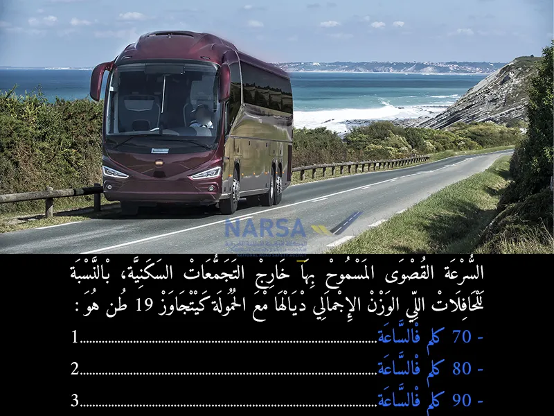
بيّن الجواب
الجواب الصحيح: 1
حسب المادة 176 من مدونة السير المغربية، السرعة القصوى المسموح بها للحافلات والشاحنات التي يتجاوز وزنها الإجمالي 3.5 طن هي:
70 كلم/ساعة خارج التجمعات السكنية.
وبالتالي، إذا كانت الحافلة التي وزنها الإجمالي 32 طن، فسرعتها القصوى المسموح بها خارج التجمعات السكنية هي 70 كلم/ساعة.
⚠ ملاحظة:
يجب دائمًا احترام إشارات المرور المحددة للسرعة، حيث قد تكون هناك مناطق محددة بسرعة أقل من 70 كلم/ساعةالسؤال 5
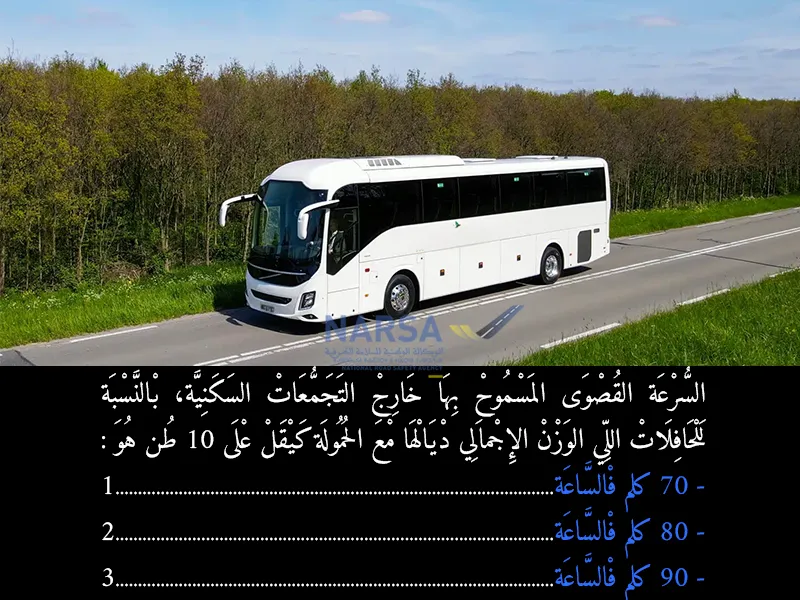
بيّن الجواب
الجواب الصحيح: 3
بالنسبة للحافلات التي يكون الوزن الإجمالي ديالها مع الحمولة أقل من 10 طن، السرعة القصوى المسموح بها خارج التجمعات السكنية هي 80 كلم في الساعة.
هذا حسب مدونة السير المغربية التي تحدد السرعات القصوى حسب نوع وحجم المركبة.
المادة 17
باستثناء المقتضيات المتعلقة بالسرعة في الطرق السيارة، يجب على كل سائق، خارج التجمعات العمرانية، ألا يتجاوز السرعة القصوى المحددة في :
2- 90 كيلومترا في الساعة بالنسبة :
لمركبات النقل العمومي للأشخاص التي يفوق وزنها الإجمالي المأذون به محملة 3.500 كيلوغرام دون أن يتجاوز 10.000 كيلو غرام ؛السؤال 6
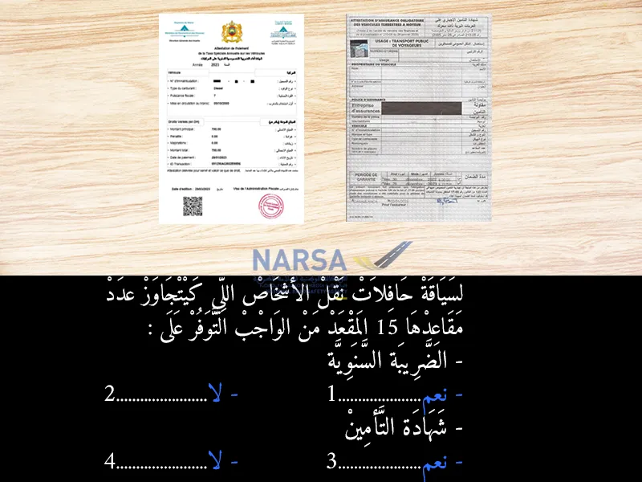
بيّن الجواب
الجواب الصحيح: 1 و 3
سياقة حافلات نقل الأشخاص اللي كتفوق 15 مقعد:
أي واحد بغا يسوق حافلة فيها أكثر من 15 مقعد (يعني حافلات النقل الجماعي، سواء للمسافرين أو العمال أو التلاميذ...)، خاصو يتوفّر على وثائق ضرورية باش يْكون كيسوق قانونياً، ومن أهمها:
✅ 1. الضريبة السنوية على المركبات (la vignette)
هي ضريبة كيتخلص عليها كل عام.
✅ 2. شهادة التأمين الإجباري (Assurance)
مايمكنش تسوق حافلة فالمغرب بلا تأمين، راه ضروري وواجب قانوني.
🔸 شنو كيدير التأمين؟
كيحميك إنتا و الركّاب و الناس الآخرين، فحالة وقع حادث. كيعوّض الخسائر، وكيعطيك التغطية القانونيةالسؤال 7
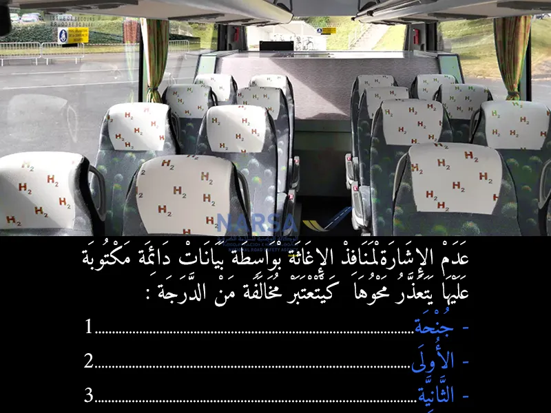
بيّن الجواب
الجواب الصحيح: 3
منافذ الإغاثة هي الأبواب أو النوافذ التي تُستخدم في حالات الطوارئ، مثل الحوادث أو الحرائق، لتمكين الركاب من الخروج بسرعة وأمان.
🔹 البيانات الدائمة: يجب أن تكون هذه المنافذ مُشارًا إليها بوضوح باستخدام ملصقات أو علامات دائمة لا يمكن محوها بسهولة، حتى يتمكن الجميع من تحديد مواقعها بسرعة في الحالات الطارئة.
---
⚠ لماذا تُعتبر مخالفة من الدرجة الثانية؟
السلامة أولاً: عدم وجود إشارات واضحة على منافذ الإغاثة يُعرض حياة الركاب للخطر في حالات الطوارئ.
الالتزام القانوني: القانون يُلزم جميع المركبات، خاصة تلك المخصصة لنقل الأشخاص، بتوفير هذه الإشارات لضمان سلامة الركابالسؤال 8
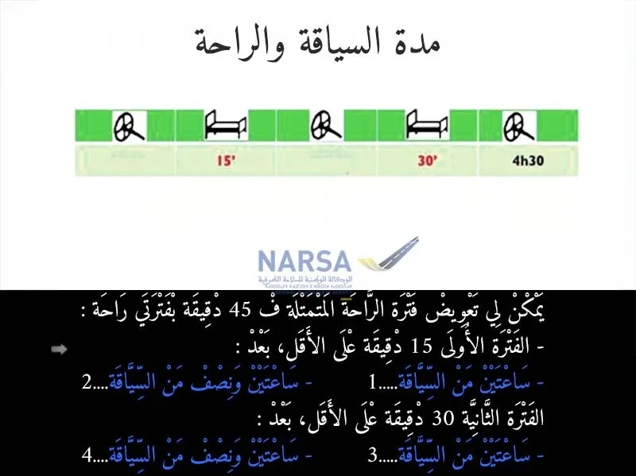
بيّن الجواب
الجواب الصحيح: 1 و 4
حسب المادة 12 من قانون السير المغربي، يمكن للسائق يعوض فترة الراحة الإجبارية اللي هي 45 دقيقة بجوج فترات راحة صغيرة:
الفترة الأولى تكون على الأقل 15 دقيقة وخصها تجي بعد ساعتين من السياقة المتواصلة.
والفترة الثانية تكون على الأقل 30 دقيقة وكتجي بعد ساعتين ونصف من السياقة.
هاد النظام كيساعد السائق يريح مزيان وما يتعبش بزاف، وهذا مهم باش يحافظ على التركيز والسلامة فالطريقالسؤال 9
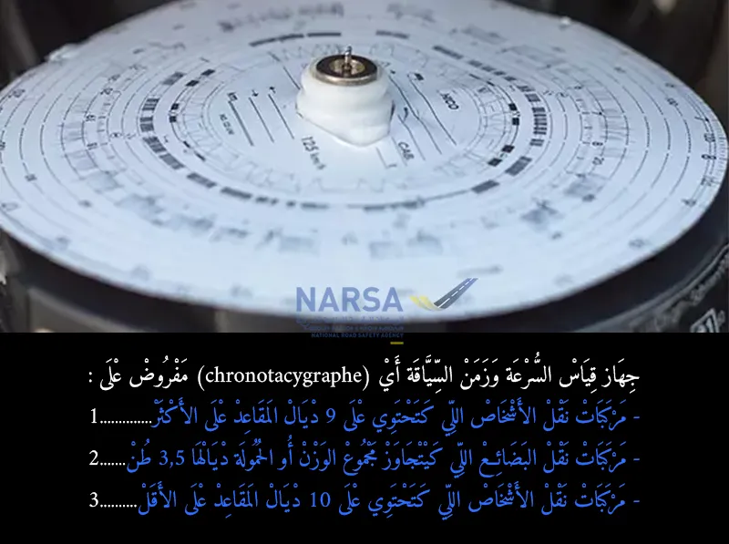
بيّن الجواب
الجواب الصحيح: 2 و 3
الجهاز اللي كيقيس السرعة ووقت السياقة (chronotachygraphe) خاص يكون فـ:
المركبات اللي كتنقل الناس وعندها 10 بلايص كثر (الحافلات الكبيرة)
والشاحنات اللي الوزن ديالها فوق 3.5 طن
القانون المغربي قالها فـ المادة 76 من قانون السير 52.05.
الهدف من هاد الجهاز هو باش السائق ما يسوقش بزاف بلا راحة، وهذا كيعطي السلامة فالطريقالسؤال 10
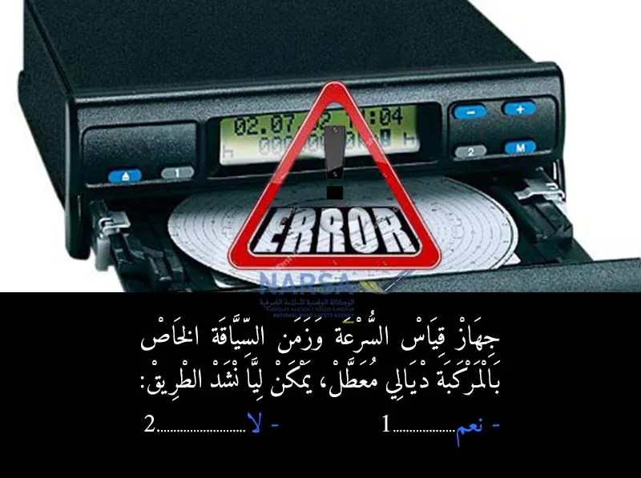
بيّن الجواب
الجواب الصحيح: 2
إلى كان التاكوغراف (جهاز قياس السرعة و وقت السياقة) ديال الشاحنة 🚛 ولا الحافلة 🚌 خاسر، مخاصكش تسوق بيها في الطريق ⛔. التاكوغراف جهاز إجباري للسائقين المهنيين 🧑✈️، كيسجل السرعة ⚡، المسافة المقطوعة 📏، و أوقات السياقة ⏱️ والراحة 😴، وهذا الشي باش كيتأكدوا من احترام القوانين ⚖️ ديال السياقة والراحة باش يتفاداو حوادث السير 💥 اللي كتجي من الإرهاق.
إلى كان معطل، خاصك تصلحو قبل ما تخرج للطريق 🛠️، و إلا غادي تكون عرضة لغرامات مالية كبيرة 💸 و يمكن حتى سحب الرخصة 🚫. تفاداو المشاكل وسوقو بأمان! 🛡️👍السؤال 11
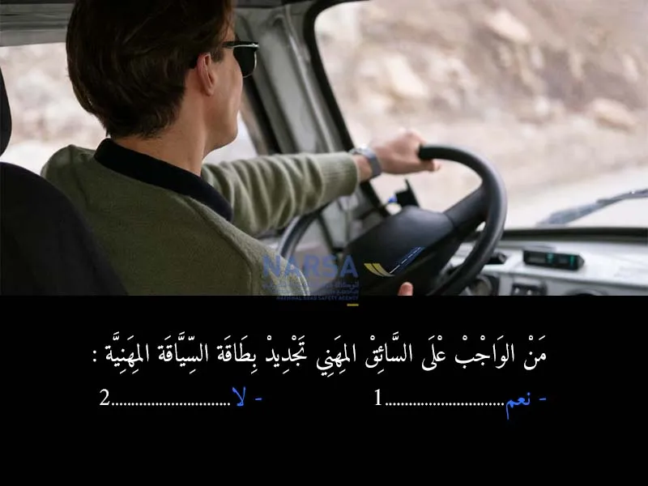
بيّن الجواب
الجواب الصحيح: 1
- بطاقة السياقة المهنية 🧑✈️ هي وثيقة ضرورية لكل سائق كيسوق مركبات كبيرة 🚛🚌 أو كيقوم بنقل الأشخاص 👨👩👧👦 أو البضائع 📦 مقابل أجر.
- هاد البطاقة عندها مدة صلاحية محددة (غالباً 5 سنوات أو 10 سنوات حسب الفئة والعمر) 📅، ومن الواجب على السائق المهني يدير ليها التجديد قبل ما تسالي الصلاحية ديالها ⏳.السؤال 12
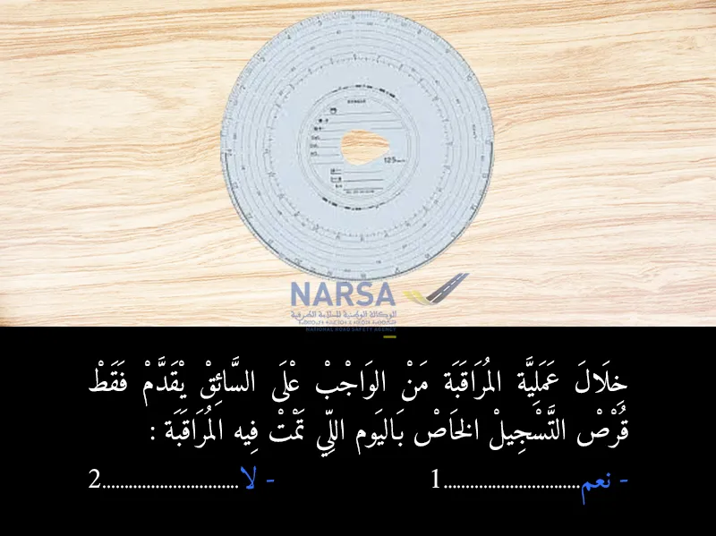
بيّن الجواب
الجواب الصحيح: 2
القانون كايفرض على السائق المهني 🧑✈️ يحتفظ و يقدم خلال المراقبة:
القرص ديال النهار اللي كدوز فيه المراقبة 💿.
الأقراص ديال 28 يوم اللي فاتو 🗓️، هادو خاص يكونوا عندك في المركبة 🚛🚌.
بالإضافة إلى القرص ديال الأسبوع الجاري (إلى كانت المراقبة في نص الأسبوع مثلاً).
هاد الأقراص كاملة ضرورية باش يتأكد المراقبين من احترامك لأوقات السياقة ⏱️، أوقات الراحة 😴، والسرعة المسموح بها ⚡ على مدى فترة طويلة. عدم تقديم هاد الأقراص كاملة كيعتبر مخالفة للقانون 🚨 وكتعرضك لعقوبات.
داكشي علاش، ديما احتفظ بالأقراص المطلوبة كاملة في المركبة ديالك! ✅السؤال 13
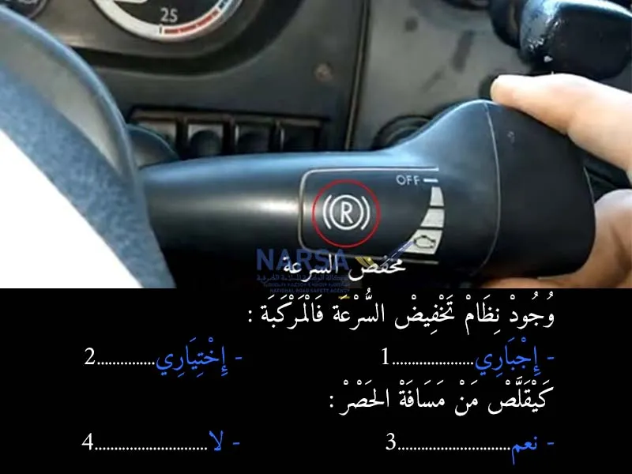
بيّن الجواب
الجواب الصحيح: 2 و 3
- اختياري 🤷♂️ في بعض الحالات أو حسب نوع المركبة. رغم أهميته الكبيرة في المركبات الثقيلة 🚛🚌، خصوصاً الفراميل المساعدة (بحال الفرامل المحرك "Frein Moteur" أو المبطئ "Ralentisseur")
- هاد الأنظمة ديال تخفيض السرعة (الفرامل المساعدة) كتخدم بشكل مستقل أو بالتعاون مع الفرامل الرئيسية ديال المركبة. الدور ديالها هو تخفيف الضغط على الفرامل العادية وتقليل السخونة الزائدة ♨️، وكتسمح بنقصان تدريجي للسرعة بطريقة فعالة ⚡. هاد الفعالية الإضافية في تقليل السرعة كتعني بالضرورة أن المركبة كتحتاج مسافة أقل باش توقف تمامًا 🛑، وبالتالي كتزيد من الأمان بشكل كبير وكتساعد على تفادي الحوادث 💥.السؤال 14
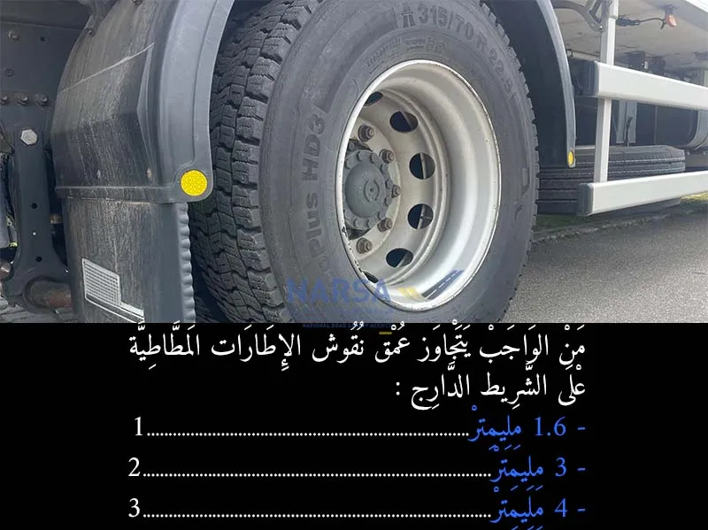
بيّن الجواب
الجواب الصحيح: 2
الجواب الصحيح هو "2. 3 مليمتر" ✅.
- عمق النقوش (المداس أو السامطة) في الإطارات टायर ضروري جداً للأمان 🛡️ ديال المركبة، خصوصاً في الطرق المبللة 🌧️ أو الزلقة. هاد النقوش هي اللي كتمكن الرويضة باش تشد مزيان في الطريق (التماسك) وكتساعد على تصريف الماء.السؤال 15
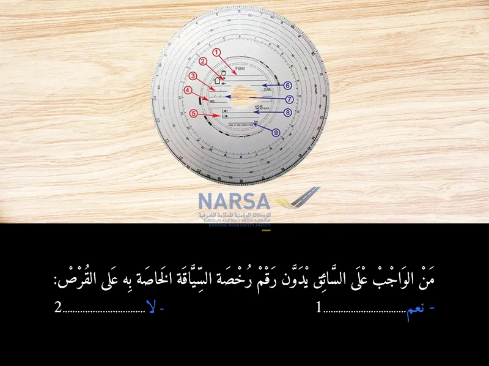
بيّن الجواب
الجواب الصحيح: 2
قرص التاكوغراف 💿 هو وثيقة مهمة كتوثق الأنشطة ديال السائق (السياقة 🛣️، الراحة 😴، العمل الآخر 👷) والسرعة ⚡ والمسافة المقطوعة 📏. هاد القرص فيه بلايص مخصصة لتسجيل معلومات معينة، بحال:
الاسم الكامل للسائق 🧑✈️.
تاريخ بداية العمل وتاريخ النهاية 🗓️.
رقم لوحة ترقيم المركبة (الماتريكول) 🔢.
المسافة المقطوعة 🛣️ (في البداية والنهاية).
و بعض المعلومات الأخرى حسب نوع التاكوغراف.
لكن، مدونة السير المغربية 🇲🇦 ماكتفرضش على السائق أنه يدون "رقم رخصة السياقة" ديالو مباشرة على قرص التاكوغراف 📝. المعلومات الشخصية المطلوبة كتكون محدودة بالأساس بالاسم والتوقيع.السؤال 16
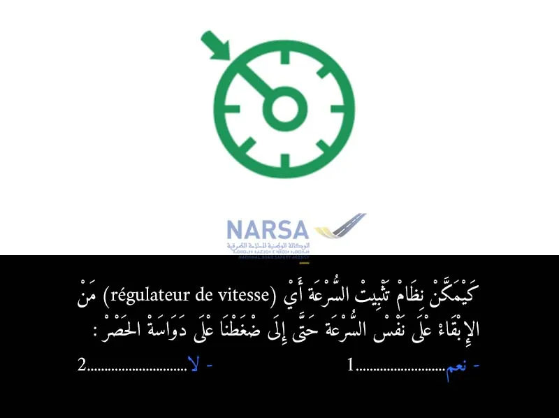
بيّن الجواب
الجواب الصحيح: 2
نظام تثبيت السرعة (régulateur de vitesse) هو نظام كيعاون السائق باش يحافظ على سرعة مستقرة بلا ما يضطر يبقى دايز على دواسة السرعة.
ولكن إلى ضغطنا على دواسة الحصر (الفران)،
النظام كيتلغا أو كيتوقف مباشرة، يعني ماكيبقاش محافظ على السرعة.
هادشي كيديروه باش يعطي الأولوية للسلامة، حيث كيبان باللي السائق بغا يبطأ أو يوقفالسؤال 17
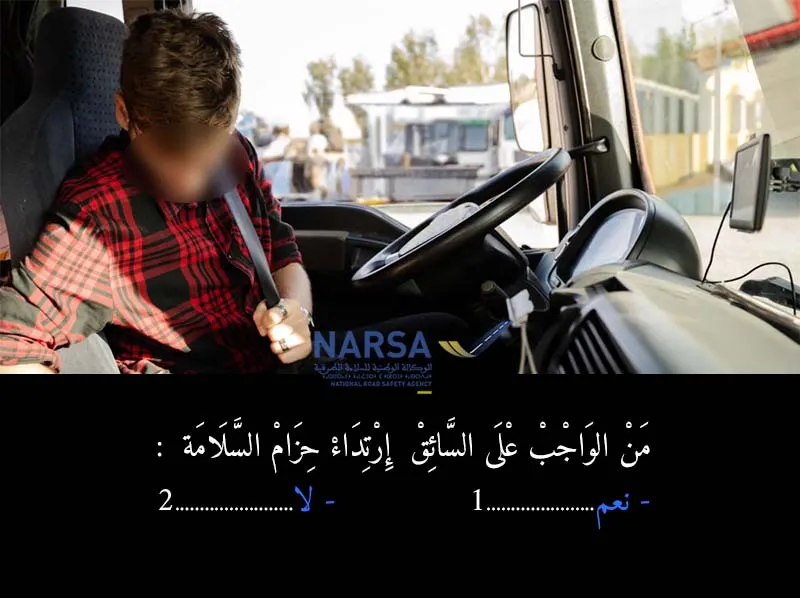
بيّن الجواب
الجواب الصحيح: 1
حزام السلامة 🎗️ هو واحد من أهم وسائل السلامة النشطة في المركبة، سواء كانت سيارة خفيفة 🚗، شاحنة 🚛، أو حافلة 🚌. الدور ديالو هو الحفاظ على السائق والركاب في أماكنهم في حالة وقوع حادث 💥 أو فرملة مفاجئة 🛑، وهذا الشي كيقلل بشكل كبير من خطر الإصابات الخطيرة أو الوفاة لا قدر الله.
في المغرب 🇲🇦، مدونة السير كتفرض بشكل قاطع على جميع السائقين (سواء كانوا كيسوقو سيارات خفيفة أو مركبات ثقيلة) و الركاب في المقاعد الأمامية، ارتداء حزام السلامة. وكذلك على الركاب في المقاعد الخلفية إذا كانت المركبة مزودة بأحزمة أمان.السؤال 18
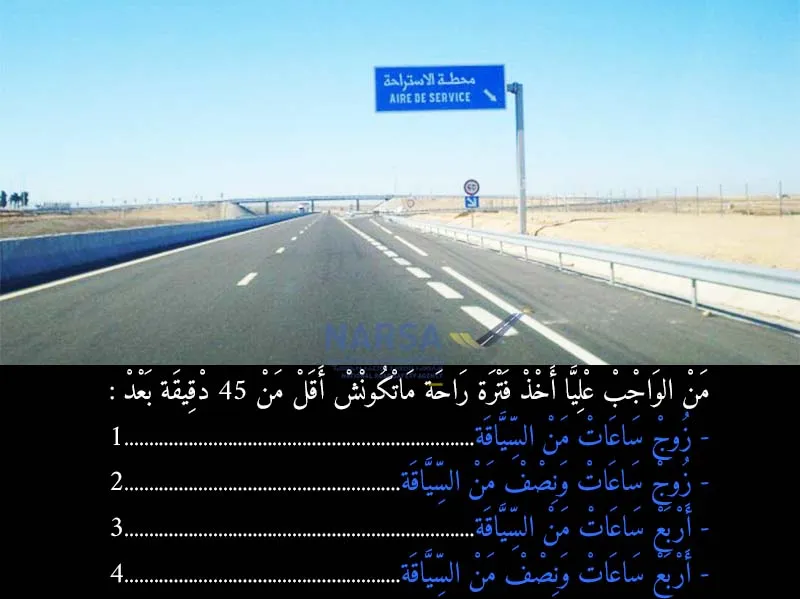
بيّن الجواب
الجواب الصحيح: 4
هاد السؤال كيتعلق بقوانين أوقات السياقة والراحة، اللي هي مهمة جداً للسائقين المهنيين 🧑✈️ (سائقي الشاحنات 🚛 والحافلات 🚌) باش يتفاداو الإرهاق 😴 اللي كيكون سبب رئيسي في حوادث السير 💥.
مدونة السير المغربية 🇲🇦، وكذلك القوانين الدولية المنظمة للنقل الطرقي (خاصة اتفاقية AETR)، كتفرض على السائق المهني:
الحد الأقصى للسياقة المتواصلة هو أربع ساعات ونصف (4 ساعات و 30 دقيقة) ⏱️.
بعد هاد المدة، من الواجب على السائق ياخذ فترة راحة ماتقلش على 45 دقيقة ⏳.
هاد الراحة ديال 45 دقيقة يمكن لي يديرها دفعة واحدة، أو يقسمها على جوج: 15 دقيقة أولاً، ثم 30 دقيقة ثانياً، بشرط تكون الأولى هي اللي في الأول.السؤال 19
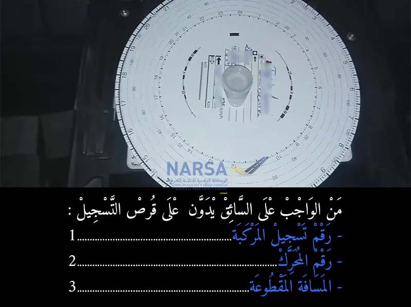
بيّن الجواب
الجواب الصحيح: 1 و 3
قرص التاكوغراف 💿 هو وثيقة قانونية وضرورية لتتبع الأنشطة ديال السائق 🧑✈️ والمركبة 🚛🚌. باش تكون هاد الوثيقة صحيحة ومفصلة، كاين معلومات معينة من الواجب على السائق يسجلها يدوياً في القرص قبل ما يبدا السياقة وبعد ما يساليها. من بين هاد المعلومات المهمة:
رقم تسجيل المركبة (الماتريكول) 🔢: هادي معلومة أساسية لربط القرص بالمركبة اللي قامت بالرحلة. بدونها، كيكون صعيب نعرفو أي مركبة استخدمت القرص و سجلت عليه البيانات، وبالتالي كتفقد المصداقية القانونية ديالو.
رقم المحرك ⚙️: هاد المعلومة ماشي من الواجب على السائق يسجلها في قرص التاكوغراف. رقم المحرك هو معلومة تقنية للمركبة، وماشي من بين البيانات اللي كيفرض القانون تسجيلها يدوياً على القرص.
المسافة المقطوعة 🛣️: هادي أيضاً معلومة ضرورية جداً. السائق كيسجل قراءة عداد الكيلومترات (الكيلومتراج) في بداية الرحلة وفي نهايتها. هادشي كيمكن من حساب المسافة الإجمالية اللي قطعتها المركبة، وكيساعد في التأكد من صحة بيانات السرعة اللي كيسجلها الجهاز.السؤال 20
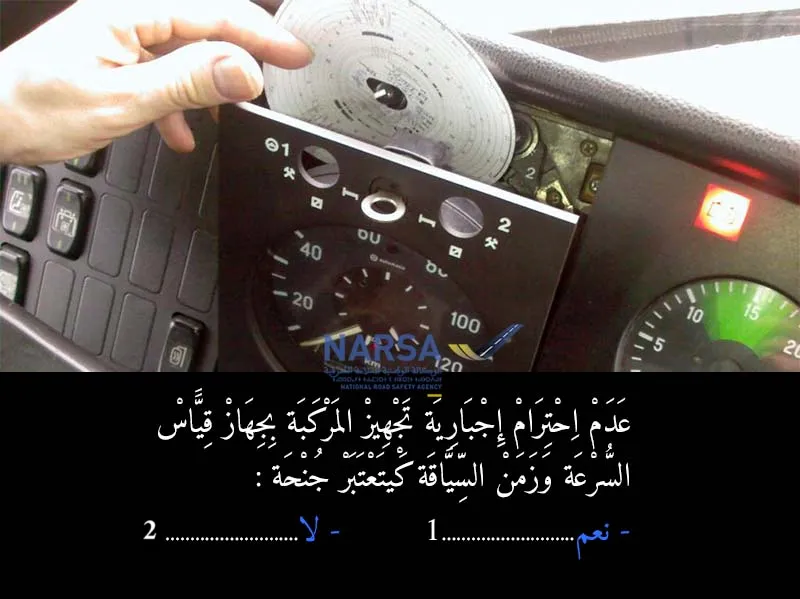
بيّن الجواب
الجواب الصحيح: 1
عدم احترام إجبارية تجهيز مركبات نقل البضائع ومركبات النقل الجماعي للأشخاص بجهاز قياس السرعة وزمن السياقة يعتبر جنحة ، يعاقب عليها بالحبس من شهر واحد إلى ستة (6) أشهر وبغرامة من خمسة آلاف (5.000) إلى اثني عشر ألف (12.000) درهم أو بإحدى هاتين العقوبتين فقط